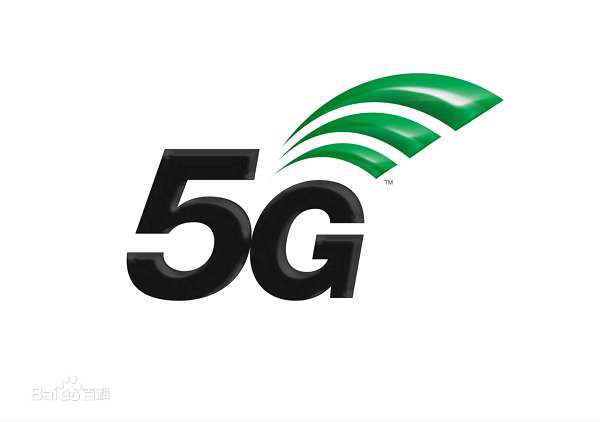

5G
本词条由“科普中国”百科科学词条编写与应用工作项目_审核_。
2016年11月16日，举办于浙江嘉兴市乌镇的第三届世界互联网大会_[1-2]__，美国高通公司带来的可以实现“万物互联”的5G技术原型入选15项“黑科技”——世界互联网领先成果。高通5G向千兆移动网络和人工智能迈进_[3]__。
第五代移动电话行动通信标准，也称第五代移动通信技术，外语缩写：5G。也是4G之后的延伸，正在研究中。目前还没有任何电信公司或标准订定组织（像3GPP、WiMAX论坛及ITU-R）的公开规格或官方文件提到5G。
中国（华为）、韩国（三星电子）、日本、欧盟都在投入相当的资源研发5G网络。
2017年12月21日，在国际电信标准组织3GPP_RAN第78次全体会议上，5G_NR首发版本正式冻结并发布。_[4]__2018年2月23日，沃达丰和华为完成首次5G通话测试_[5]__。
